8.2 分析JRA记录
分析JRA的记录信息看起来像是在表演黑魔法，因此本章会像第7章一样，详细介绍JRA编辑器中的每个标签页。
8.2.1 General标签组
General标签组中提供了一些关键信息和元数据。在JRA中，它包含了3个标签页，分别是 Overview Recoding 和System。
8.2.1.1 Overview标签页
General标签组的 Overview标签页中包含了一些与JRA记录相关的关键信息，可以从宏观上看出系统是否运转正常。
标签叶的第一部分是几个仪表盘，在其中显示了CPU使用率、堆内存和暂停时间等统计信息。
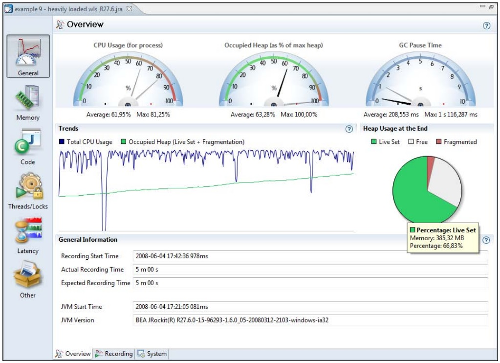
理想情况下，系统资源应该被充分利用，但负载又不会太过饱和。一般来说， Occupied Heap(Live Set + Fragmentation)的数值应该小于等于堆最大值的一半。这样可以使垃圾回收的执行频率保持在较低的水平。
当然，具体数值还是要根据应用程序自身的特点量身而定。对于那些内存分配速率很低的应用程序来说， Occupied Head的值即使大一些也没关系。而对那些执行批处理任务的应用程序来说，更关注系统的吞吐量，是否充分利用了CPU资源，至于暂停时间，则根本不关心。
Trends展示区中以趋势图的形式展示了CPU使用率和堆内存的变化情况。在旁边是一个饼状图，展示了记录结束时堆的使用情况。如果堆中有超过1/3的区域已经碎片化了，那么这时候就应该考虑调整JRockit的垃圾回收器了（参见第5章的内容），并且也应该深入探究一下应用程序的内存分配行为了（更多信息请参见8.2.5.6节的内容）。
在该标签页的底部是一个综述信息，例如目标JVM的版本信息和记录时间等。
在示例图中可以看出，Live Set + Fragmentation的数值呈持续增长态势，这说明在每次垃圾回收过后，堆中可用内存都变得更少了，通常来说，这意味着应用程序很可能发生了内存泄漏。长此以往，应用程序会因OutOfMemoryError错误而中断运行。
8.2.1.2 Recoding标签页
该标签页中包含了与记录本身相关的一些元数据，例如记录的持续时间，各个记录参数的值等。这些信息可用于检查是否有JRA记录是否是按预想的设定进行的。
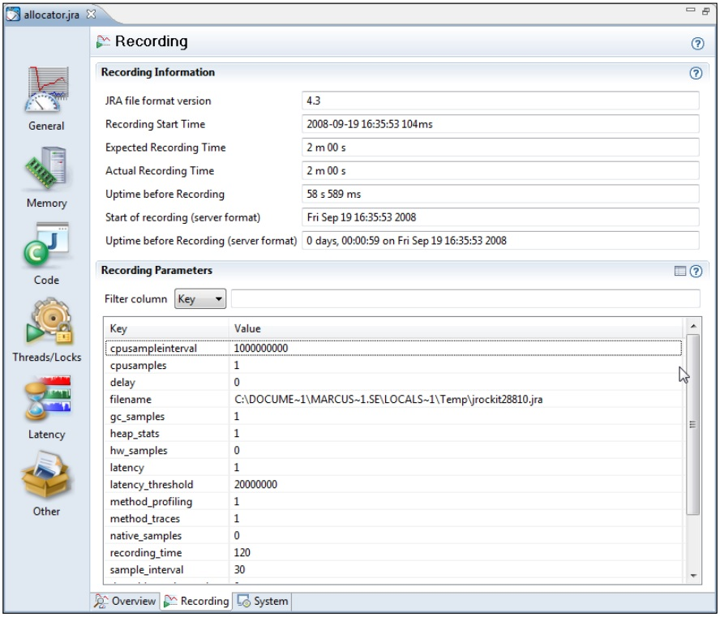
8.2.1.3 System标签页
该标签页中包含了目标JRockit JVM的一些系统信息，如操作系统和JVM启动参数等。
8.2.2 Memory标签组
Memory标签组中包含了与内存信息相关的内容，例如内存使用率，垃圾回收信息等。在JRA中，其共有6个子标签页，分别是 Overview GCs GC Statistics Allocation Heap Statistics Heap Contents和 Object Statistics**。
8.2.2.1 Overview标签页
Overview标签页中包含了一些与内存相关的综述性信息，例如目标服务器当前可用物理内容的数量，GC暂停比率（即GC暂停时间占应用程序运行总时间的百分比）等。
如果GC暂停比率达到了15%～20%，这通常意味着JVM有很大的内存压力。
在 Overview标签页的地步，列出了在记录过程中所用到的垃圾回收策略。更多有关垃圾回收策略的内容，请参见第3章。
8.2.2.2 GC标签页
GC标签页中包含了记录期间与垃圾回收相关的信息。
一般来说，在 Garbage Collections表中，按 Long Pause字段倒序排列可以更好的看出垃圾回收的性能瓶颈。当然，通过JRA中其他标签的内容，或应用程序的GC日志也可以获得相同信息。在下面的示例中，第一行的记录正好也是暂停时间最长的记录。
有时候，在分析垃圾回收的记录时，会去除第一次和最后一次垃圾回收记录，因此某些JVM参数配置会强制记录过程中的第一次和最后一次垃圾回收必须为 full gc，以便收集相关数据。这种机制可能会破坏准确式垃圾回收的暂停时间目标。在JRockit Flight Recorder中同样存在。
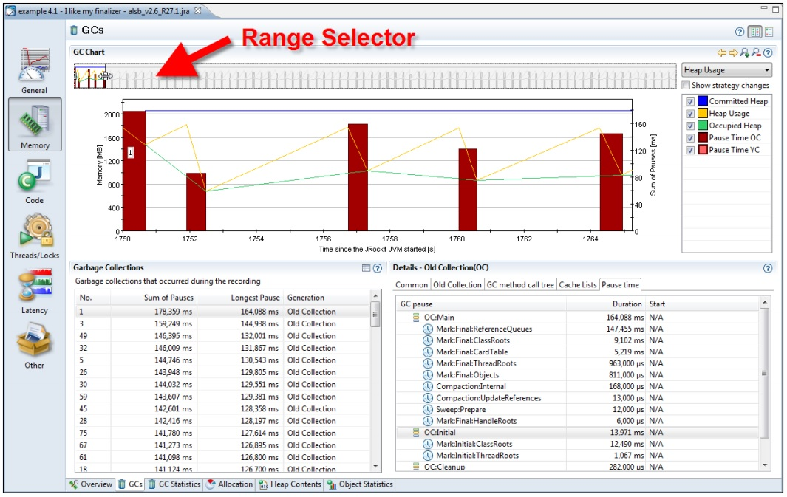
图中最顶端是 区间选择器（Range Selector），用于选择要显示记录结果的哪一部分。在该示例中，选择了记录开始部分的一段时间，显示了这段时间中的相关垃圾回收信息，包括 Occupied Head（绿线）， committed Heap（蓝线）和 Heap Usage（黄线）等。
如果某个应用程序因垃圾回收而导致暂停的频率很高，则其 Occupied Heap的值会很接近堆的最大值。因此，增大堆的最大值可以有效的提升应用程序的整体性能。使用命令行参数-Xmx即可设置堆的最大的值。在这个示例中，内存相关的信息开起来还都比较正常。
在 **Details展示区中，使用了多个标签页来显示垃圾回收的具体信息。用户可以通过点击垃圾回收信息图和在数据表中选择具体条目来查看详细信息，包括垃圾回收的起因，引用队列的大小，堆使用率，甚至是每次暂停的详细信息。
在前面的截图中可以看到，应用程序暂停后，有很大一部分时间是用来处理引用队列的对象。切换到 References and Finalizers图可以看出大部分对象都位于 Finalizer队列中。
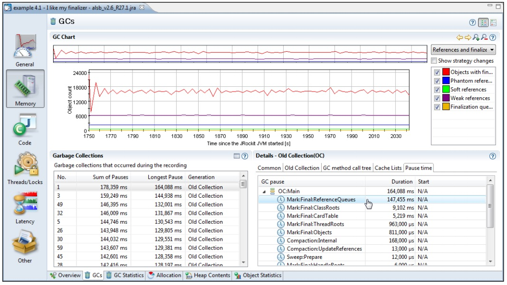
对于这种应用程序来说，减少对 *finalize方法的调用可以有效提升应用程序的整体性能。相关内容请参见第3章。
上面的示例是使用JRockit R27.1演示的，虽不是最新版，但也足以说明问题，因为这是基于真实场景中进行性能优化而得的。正如截图中的内容所示，这个示例并没有记录下每次应用程序暂停的开始时间，事实上，在JRockit的后续版本中，已经加入了对暂停开始时间的记录，而JRockit开发团队也会持续跟进，添加更多与性能调优相关的特性，以便能够更好的对JRockit性能问题进行分析。将会在下一章中介绍的JRockit Flight Recorder会记录更多有关性能调优的内容。
在下面的示例中，因Finalizer队列引起的性能问题更加明显，而应用程序暂停部分之所以与前面的示例不同，是因为使用了不同的垃圾回收策略。
截图中所显示的数据来自另一个应用程序，数据表明，垃圾回收的部分时间都花在了跟踪Finalizer队列中引用上，这些时间甚至比花在 tongbu 外部整理(synchronized external compaction)的时间都长。很明显，性能瓶颈就在Finalizer上。
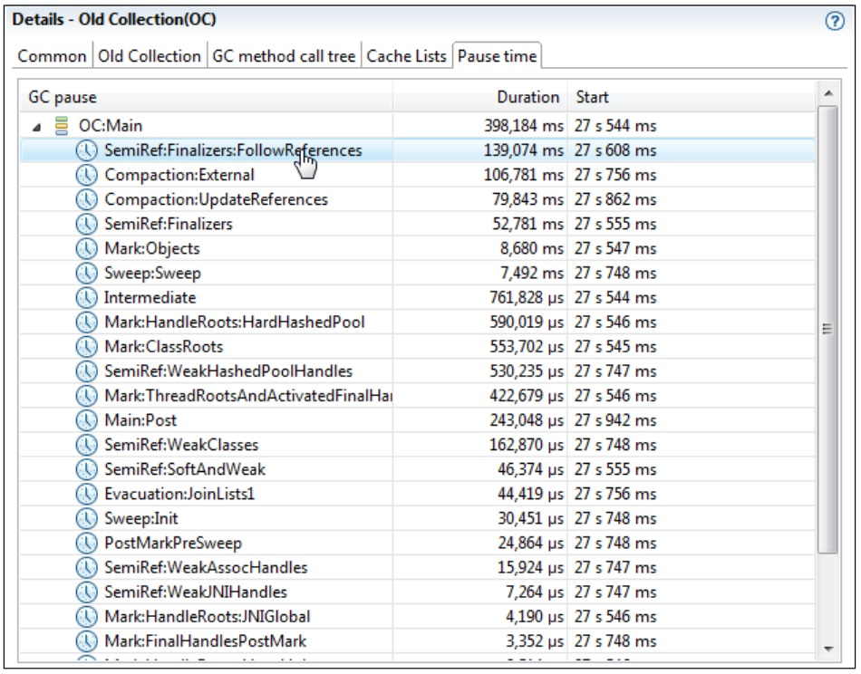
若想减少垃圾回收的次数，就需要探查出到底是什么原因导致了垃圾回收的发生，具体来说就是，创建对象的操作都发生在哪里。下一节中将会介绍到的 GC调用树可用于探查对象创建的操作。如果要获取有关内存分配更详细的信息，可以在 Latency标签组中，查看有关 Object Allocation事件有关的内容。
对于某些应用程序来说，还可以通过调整JRockit的内存系统来降低垃圾回收的暂停时间。更多有关JRockit调优的内容，请参见第5章。
8.2.2.3 GC统计信息标签页
该标签页中包含了与垃圾回收相关的一些统计信息，其中最重要的当属 GC Call Tree表中的内容，从中可以看出每次垃圾回收的调用栈信息。但遗憾的是，在调用栈中也存在着一些JRockit内部代码，用户不得不继续深挖，才能找到应用程序自身的方法调用。
在JRockit R27.6版本之前，通常使用这种方法找出内存分配问题的根源，而在新近的版本中，则可以使用更加强有力的武器来查找内存性能问题，即 **Histogram**。
为节篇幅，在下面的截图中，JRockit内部方法的调用栈帧并没有完全展开。从截图中可以看出，大部分垃圾回收都是用于调用了Arrays.copyOf(char[], int)方法导致的。
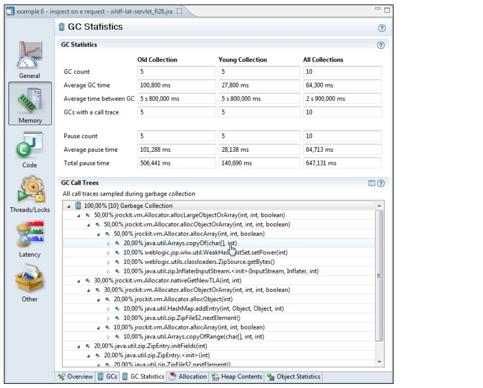
8.2.2.4 内存分配标签页
内存分配标签页中包含的信息主要用于对JRockit内存系统进行调优。在这里会显示出对象的相对分配速率，其值会影响到对 Thread Local Area(TLA)大小的选择（有关TLA的内容请参见第3章和第5章）。此外，还可以以线程为单位查看内存分配的相关数据，这样更有助于发现应用程序本身在内存使用上的问题。
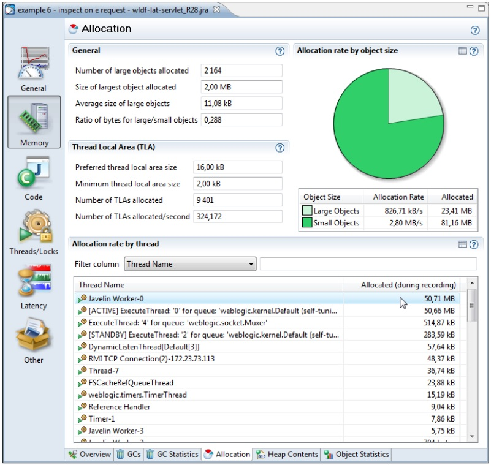
当然，调优Java应用程序的内存分配行为，最好还是要参考 Latency标签组中的 Histogram标签页中的数据。
8.2.2.5 堆信息标签页
在 堆信息标签页中包括了有关堆中对象排布的信息，在记录结束时会生成相关的快照信息。如果发现堆的碎片化程度较高，那么有两个选择，要么调优JRockit的垃圾回收机制，要么修改应用程序的内存分配方式。正如第3章所述，JVM会通过内存整理来降低堆的碎片化程度。在极端情况下，如果对系统性能有很高要求，就需要调整应用程序的内存分配模式，同时对JVM的垃圾回收策略进行调优，双管齐下才能达到预期目标。
8.2.2.6 对象统计标签页
对象统计标签页以直方图的形式展示在记录开始和结束时的对象分布情况，在这里可以看到堆中对象的类型及其所占用的内存空间。如果记录开始和结束时，对象分布情况差距过大，这说明，要么应用程序发生了内存泄漏，要么是应用程序正在执行需要分配大量内存的操作。
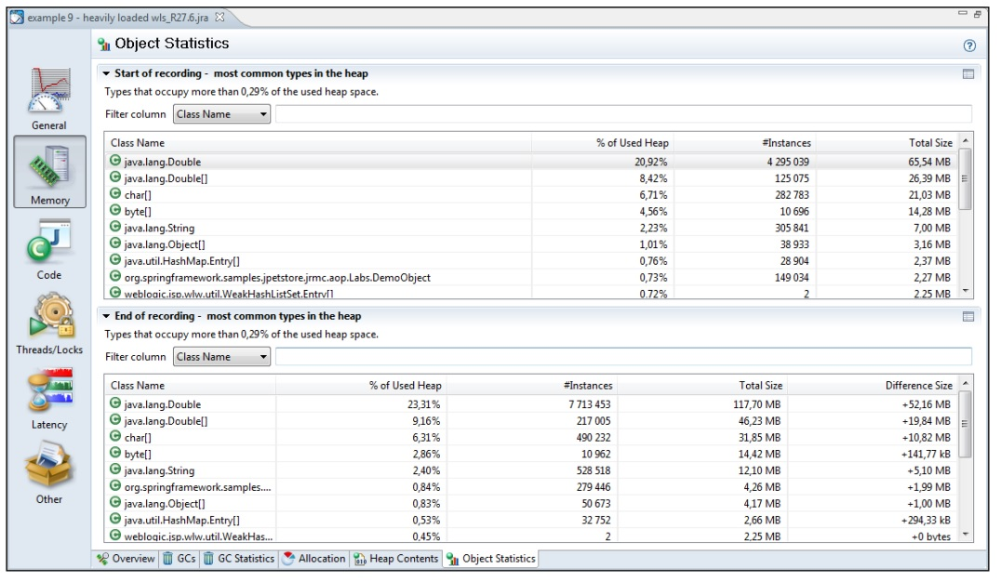
在上面的截图中，由于创建的Double对象被永久持有，因而造成内存泄漏，最终会导致应用程序因OutOfMemoryError错误而退出。
若想找到对象是在哪里创建的，最好的办法就是查看目标对象的Object Allocation事件（参考8.2.5.6节的内容），或者在 Memory Leak Detector中查询内存分配的分析结果。在第10章 The Memory Leak Detector中会对 Memory Leak Detector做详细介绍。
8.2.3 代码标签组
代码标签组中包含了以代码生成器和方法采样器相关的信息，通过 概览 热点方法 和优化3个标签页分别展示。
8.2.3.1 概览标签页
概览标签页中包含了从代码生成器和优化器中收集到的采样信息，通过这些信息可以找出哪些方法占用了应用程序的大部分运行时间。收集这些信息并不会带来额外的性能损耗，因为无论如何代码生成系统都需要用到这些信息，所以不用白不用。
对于那些受CPU影响较大的应用程序来说，通过该标签页可以查找出应用程序的优化点。所谓"受CPU影响较大的应用程序"是指，对应用程序来说，CPU是限制因素，使用主频更好的CPU，就可以提升应用程序的吞吐量。
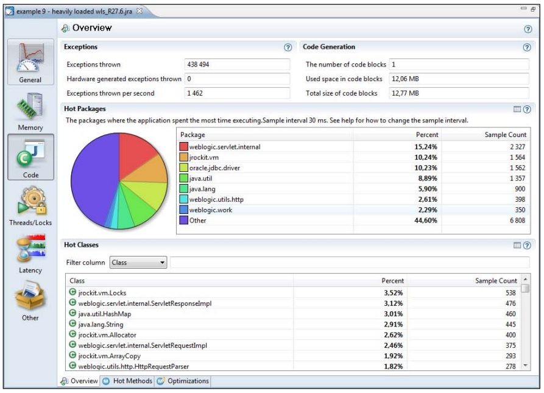
从上面的截图中可以看到，概览标签页中首先展示了应用程序在记录期间每秒所抛出的异常的数量。该数值的大小取决于硬件和应用程序两部分，硬件的性能越强，应用程序的执行速度越快，抛出异常的数量也越多。当然，在部署环境相同的情况下，抛出的异常越多，应用程序的运行情况越糟。正如之前介绍过的，JVM通常会 "赌"异常不会频繁发生。如果应用程序在执行过程中大量抛出异常，那么可能会大大降低JVM的优化效果，这时就需要开发人员仔细探查一下为何会抛出如此多的异常。有时开发人员会使用异常作为控制业务流转的手段，或者可能是因为存在有配置错误而不断抛出异常，但不论是哪种情况，都会带来性能损耗。
在JRockit Mission Control 3.1中，记录信息中只有抛出的异常数量的信息，若想找出异常的抛出路径就不得不修改日志的记录等级（参见第5章和第11章的内容）。在第9章中将会介绍如何使用JRockit Flight Recorder来分析异常信息。
在 Hot Packages和 Hot Classes展示区中，列出了在执行过程中，应用程序到底把时间花在了哪里。在 Hot Packages展示区中，热点方法是以包名为基础排序的，而在 Hot Classes展示区中，热点方法是类名为基础排序的。若想获得更细粒度的信息，则需要参考 Hot Method标签页中的数据。
在上面的截图中，应用程序在运行过程中把大量的时间都花在了执行weblogic.servlet.internal包中的类上，此外，在执行过程中还抛出了大量的异常。
8.2.3.2 热点方法标签页
该标签页中包含了与JVM代码优化器有关的详细信息。如果想要找出应用程序的优化点，不妨从这里开始。若存在大量的方法采样信息都源自于同一个方法，则对该方法进行优化，或者减少方法调用次数可以大幅提升系统的整体性能。
在下面的示例中，应用程序大部分时间都在执行com.bea.wlrt.adapter.defaultprovider.inernal.CSVPacketReceiver.parserL2Packet()方法，因此优化应用程序执行性能的关键，在于优化应用程序容器（WebLogic Event Server），而不是应用程序本身。这个示例在说明JRockit Mission Control功能强大的同时，说展示了性能优化的一个困境，即，就算是找到性能瓶颈，也不一定能搞定优化。
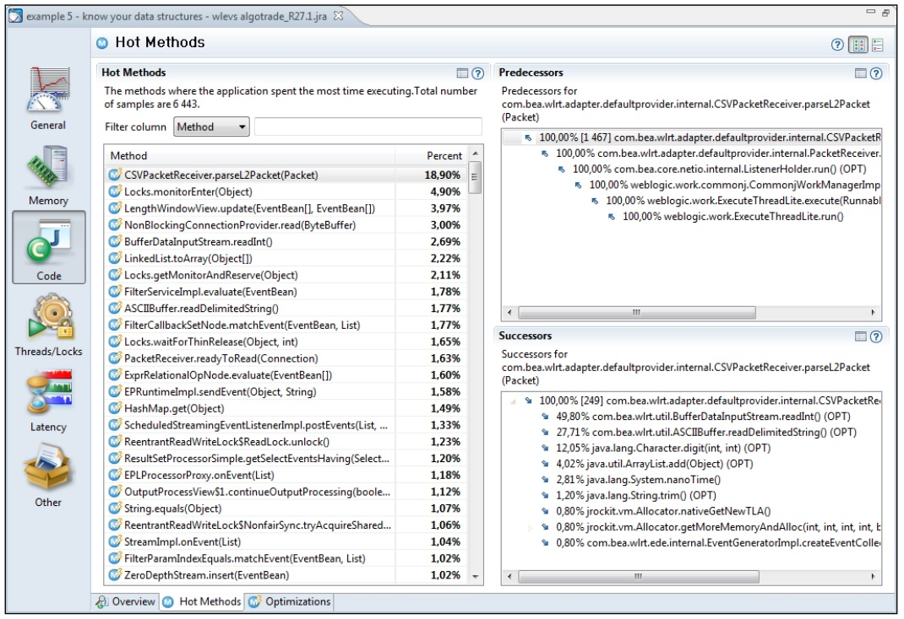
有时，通过监控信息可以发现应用程序在使用数据结构时存在问题。在下面的示例中，应用程序会频繁检查java.util.LinkedList实例中是否存储了目标对象。事实上，这个操作是很有问题的，需要遍历整个列表来查找元素，其时间复杂度为O(n)。很明显，如果改用HashSet的话，可以大大加速查找过程（如果哈希函数质量上乘，而且集合足够大的，其平均时间复杂度为O(1)）。
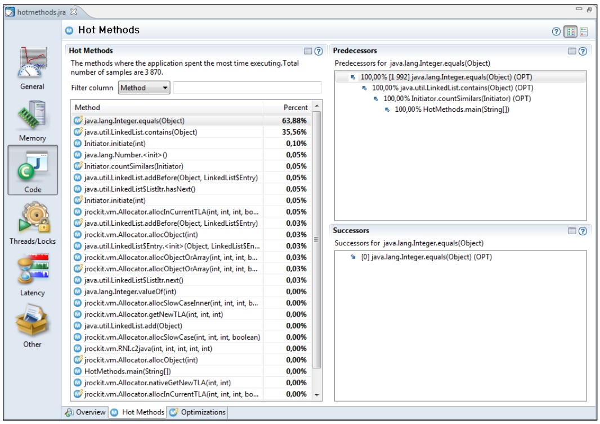
8.2.3.3 优化标签页
该标签页中包含了与JIT编译器相关各类统计信息，在追查JRockit中与优化相关的bug时非常有用。相关信息包括优化编译所消耗的时间，以及在记录过程中花费在JIT编译上锁消耗的时间。该标签页会将记录期间每个被优化过的方法都列出来，包括优化前后代码体积的大小和优化所消耗的时间。
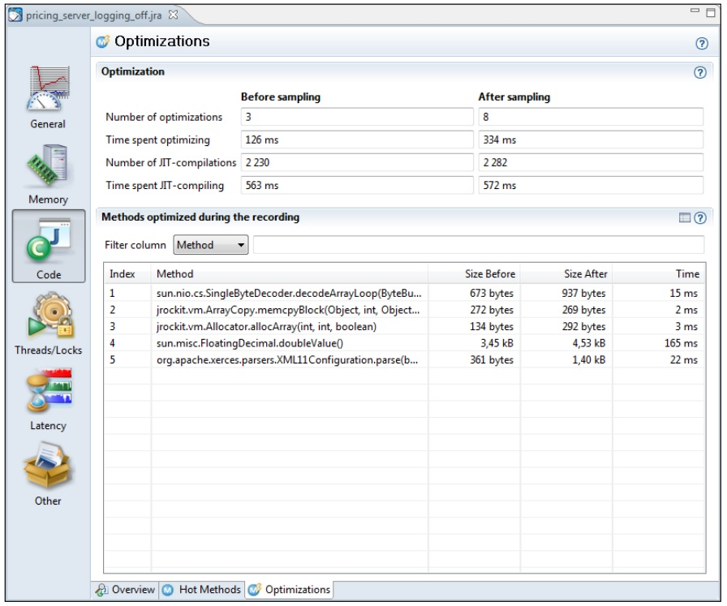
8.2.4 线程/锁标签组
在线程/锁标签组中可以查看到与线程和锁相关的信息，共分为5个标签页，分别是 概览 线程 Java锁 JVM锁和 线程转储。
8.2.4.1 概览标签页
概览标签页中展示了线程的基础信息和一些与硬件相关的信息，例如系统中可用硬件线程的数量和每秒钟上下文切换的次数。

从上图中可以看出，这是一个双核CPU，有两个硬件线程，由于具有超线程功能，每个核心会可以模拟出1个额外的硬件线程，因此共有4个硬件线程。
上下文切换平率很高并不能说明性能出了问题，而如果线程同步处理得好，就能使系统获得更高的吞吐量。
上面的示意图中展示了CPU负载，分别是CPU总负载和消耗在JVM上的负载。一般来说，CPU饱和是件好事，说明充分利用了硬件资源，钱没白花。正如前面提到，对于那些批处理应用程序来说，CPU工作饱和则皆大欢喜。但对于那些服务器端应用程序来说，如果系统在完成期望工作的基础上，能承受更高的负载就更好了。
正常情况下，服务器端应用程序都应该有能力应对瞬间峰值的出现，一般来说，就是购买性能更高的硬件。虚拟化技术的出现为开发人员解决硬件服务供应问题(hardware provisioning problem)提供了新的思路。在第13章 JRockit Virtual Edition会对这部分内容继续进行介绍。
8.2.4.2 线程标签页
该标签页中显示了线程相关的信息。默认情况下，会显示出启动时间，持续时间和Java线程ID，用户可以根据实际需要通过上下文菜单或 表设置（Table Settings）按钮来设置要显示的内容。
在下面的示例中，显示出了每个线程所述的线程组，内存分配信息和平台线程ID（Platform Thread ID）等信息。当使用本地线程时，平台线程ID是由操作系统指定的，在使用操作系统相关工具来探查线程信息时会用到平台线程ID。
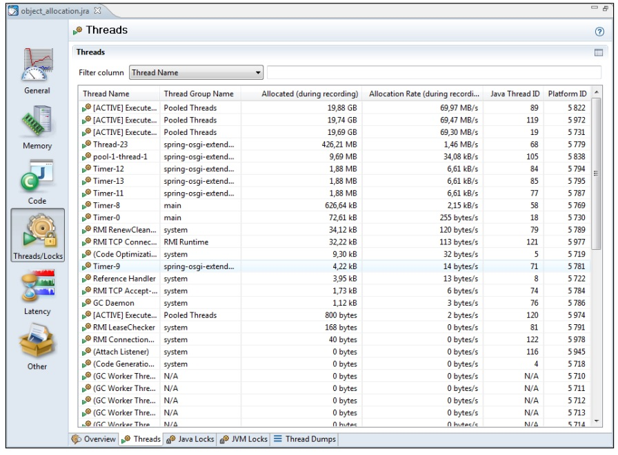
8.2.4.3 Java锁标签页
该标签页中展示了在记录过程中，通过收集监视器对象信息，可以统计处系统使用了多少Java锁。更多有关锁的相关信息，请参见第4章的内容。
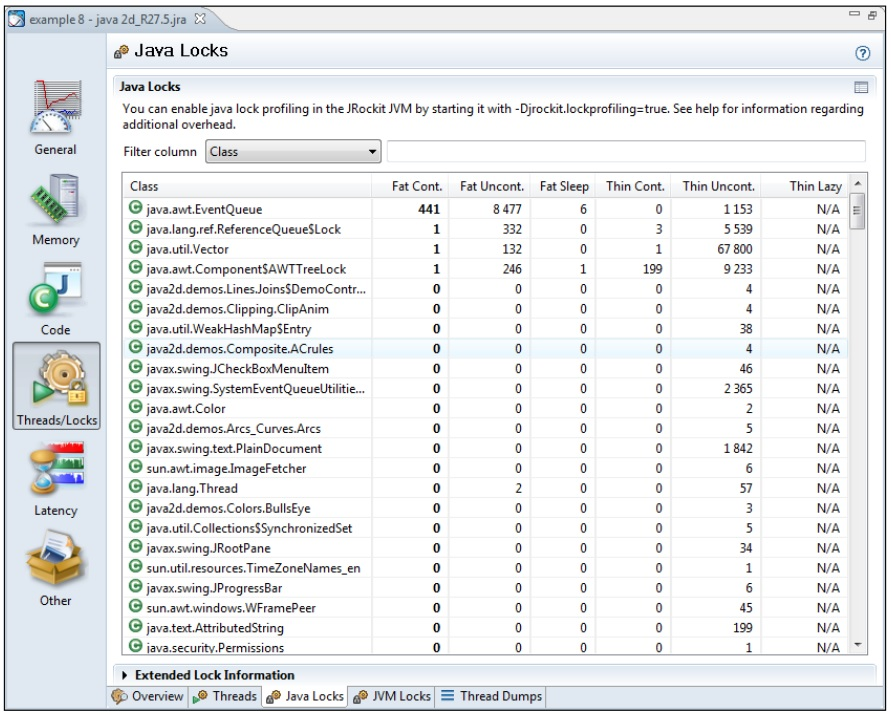
一般情况下，该标签页中的内容是空的，需要在启动JRockit JVM时将系统属性jrockit.lockprofiling设置为true，这样才会记录锁的相关信息。之所要额外设置该系统属性，是因为锁分析操作会产生额外的性能损耗，当系统中有很多同步操作时，尤为严重。
随着对JRockit的线程模型和锁模型的优化，已经可以动态启用锁分析了。从R28版本其，已经使用命令行参数
-XX:UseLockProfiling代替系统属性jrockit.lockprofiling来控制是否启用锁分析。
8.2.4.4 JVM锁标签页
该标签页展示了JVM内部本地锁相关的信息，一般来说，这些信息对JRockit JVM开发人员和支持人员比较有用。
在第4章中曾对本地锁进行过简单介绍，其中一个示例就是代码缓冲区锁，该锁有JVM使用，用于控制将编译后的代码放入到本地代码缓冲区，防止多个代码生成线程之间互相干扰。
8.2.4.5 线程转储标签页
一般来说，JRA记录中都包含了记录期间的线程转储信息。在开始记录之前调整转储的间隔时间，控制得倒的线程转储信息的数量。
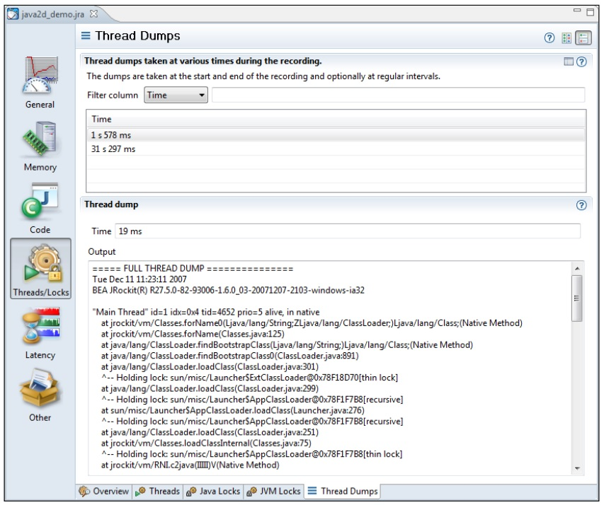
8.2.5 延迟标签组
延迟分析工具是随着JRockit Real Time一起出现的。JRockit Real Time所提供的可预测垃圾回收暂停时间（the predictable garbage collection pause time）使开发人员亟需一种分析工具来追踪Java应用程序本身所引入的延迟问题。如果应用程序自身会导致数百毫秒延迟的话，那么即使JVM保证将垃圾回收暂停时间控制在1毫秒内也没什么实际意义了。
使用延迟标签组的相关内容时，强烈建议在菜单栏中切换到 延迟透视图（latency perspective）。在该透视图中，左侧是 事件类型视图（event type view）和 属性视图（properties view）。事件类型视图可用于选择感兴趣的延迟事件，而在属性视图会显示出已选择的延迟事件的详细信息。
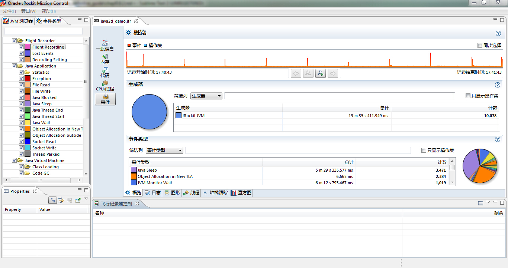
与垃圾回收标签组类似，在延迟标签组顶部也有一个范围选择器，允许用户根据实际需要只显示某一部分记录数据。修改所选择的事件或范围后，会及时在标签页中显示出更新后的数据。范围选择器中的曲线为红色，显示了在某个时间点上发生的事件总数，此外使用黑色曲线显示来现在同一时间点上CPU的负载。使用范围选择器的上下文菜单可以指明要显示哪些具体内容。
在住总延迟问题时，理解 操作集（operative set）的概念非常重要，它是指在延迟标签组添加/移除的事件集合，可以将之理解为一个可以在不同标签页之间共享，并且可以修改的事件集合。善用操作集可以获得很多有用的信息。
8.2.5.1 概览标签页
概览标签页中包含了一些与延迟事件相关的汇总信息，在范围选择器下面，可以设定延迟的阈值，以便查看延迟时间超过某个阈值的事件。由于延迟事件可能会非常多，因此需要合理设定延迟阈值以避免记录了太多的数据。默认情况下，只有延迟大于20毫秒的事件才会被记录下来。
延迟事件是指，JVM将时间花费在执行Java代码之外的事情上，并且所用时间超过了某个预设值的情况。例如，JVM可能需要等待套接字数据，或者因执行垃圾回收而暂停了应用程序。
事件类型的直方图和饼状图很好的展示了每个事件类型的延迟信息，可以方便开发人员查看记录了哪些延迟事件。值得注意的是，在饼状图中，记录的是事件的发生次数，而不是事件所持续的总时间。在直方图中，通过上下文菜单将指定类型的事件添加到操作集中可以很方便的找出指定事件的发生地点，并且会在范围选择器中以绿色标识出来。
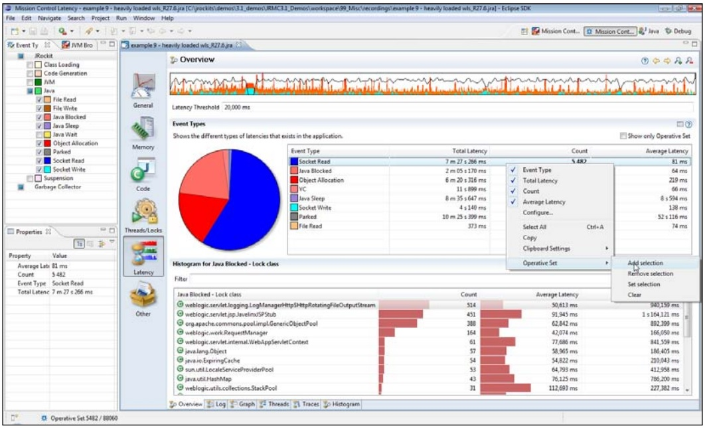
这里还有一个小技巧，在 跟踪（Trace）视图中，点击 Show only Operative Set按钮，可以看到引发指定事件类型的调用栈信息。
8.2.5.2 日志标签页
在日志（log）标签页中，以表格的形式列出了所有的事件，开发人员可以对其进行过滤/排序，筛选出所需的结果。大部分场景下，会按照持续时间进行排序，找出持续时间最长的延迟事件。有时候，持续时间最长的延迟事件可能是因为需要等待从套接字接收数据，或者执行了持续时间很长的阻塞调用，这时候，就可以在操作集移除这些事件，以便能够集中精力处理真正的问题。
8.2.5.3 图形标签页
图形标签页中以线程为单位展示了延迟事件相关的信息，下面以Java和垃圾回收器事件类型为例对相关信息进行说明。在每个线程的执行过程中，分别以不同的颜色线条表示不同的事件类型。对于每个线程来说，在任意时间点，只会有一个事件发生。当发生垃圾回收事件时，会用一条线贯穿所有线程，这样就可以很清晰的表示出某个延迟事件是否是由于垃圾回收引起的。绿色线条表示，JVM正欢快的执行Java代码，没有发生延迟事件，其他颜色表示发生了某种延迟事件。将鼠标停留在颜色线条上，会显示出其所代表的含义。

在下面的示例图中，各个线程通过一个静态属性域来共享日志记录器，该日志记录器使用同步操作来记录日志数据。从示例图中可以看出，所有的工作线程都在等待获取共享资源。工作线程以并行的方式分别执行一部分任务，但由于使用了需要同步操作的共享资源，造成了事实上的串行执行。
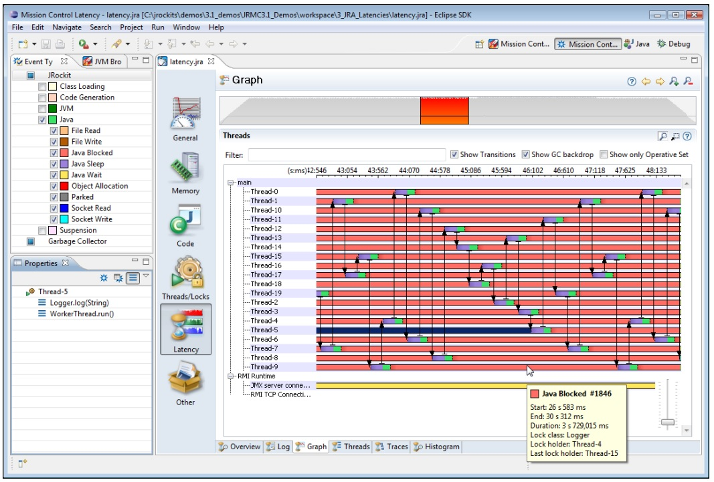
如果想获得更多详细信息，可以选择图形中的某个事件，查看其具体属性，或者将其添加到操作集中以便在其他视图中进行查看。
综上所述，通过图形标签页，可以获得对应用程序的延迟和线程行为的总体印象。
8.2.5.4 线程标签页
线程标签页以表格的形式展示了当前应用程序中所存在的线程，从形式上看与第7章中介绍的Management Console中的线程标签页类似。这其中最重要的，恐怕要算是 Count和 Allocation Rate两个属性了。
该标签页主要用于查看指定线程的相关属性，可以根据线程的名字进行过滤。此外，可以使用操作集来选择针对特定线程的事件，以便在其他标签页中查看相关数据。当然，还可以选择指定的线程集合。
8.2.5.5 堆栈跟踪标签页
该标签页用于显示事件集合的调用栈信息。例如，如果操作集中包含了String数组的分配事件集合，则在该标签页中可以查找到String数组对象分配内存的调用栈信息。在下面的示例中，只显示了操作集中包含的事件类型。如图所示，Count和 Total Latency两列分别与柱状背景色来显示每个线程在这两个数值上的相对值。
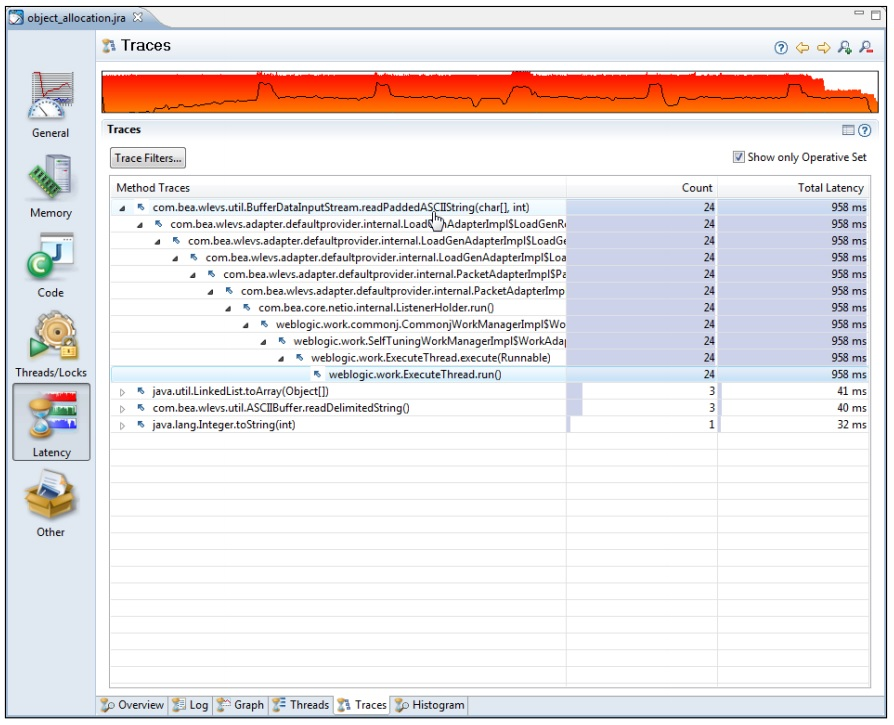
一般来说，在分析记录结果时，会根据感兴趣的事件集合对原始数据进行过滤。此外该标签中，还显示了各个延迟事件的起始调用点。
8.2.5.6 直方图标签页
This very powerful tab is used to build histograms of the events. The histogram can be built around any event value. A few examples of useful ones are:
在 直方图标签页中可以展示出相关延迟事件的直方图，例如：
- Object Allocation | Class Name: 可用于找出哪些类消耗了最多的内存
- Java Blocked | Lock Class: 可用于找出应用程序中最常使用到哪些锁
- Java Wait | Lock Class: 可用于找出应用程序中调用
wait()方法时在哪里消耗的时间最多
在找到目标事件后，可以将之添加到操作集中，以便在其他标签页中查看相关数据。
8.2.6 使用操作集
在JRA中，最常被忽视的就是操作集。下面将以一个示例来说明操作集的使用方法，在该示例中，使用了预先做好的JRA记录，这个示例应用程序中，垃圾回收器的表现不甚理想，执行频率高，且执行时间长，这一点可以在垃圾回收标签页和内存标签页中看到。

首先，从图中可以看出，垃圾回收的执行时间确实挺长，达到了数十毫秒，但好在执行频率不太高，在整个记录期间，共发生了5次垃圾回收。面对这种问题时，可以先询问一下用户是否使用了准确式垃圾回收器（deterministic GC），因为准确式垃圾回收器的执行频率稍高一些，执行时间更短。不过在这里，我们想要获知更多的信息，查明系统压力究竟来自于哪里，而不仅仅是推荐某种垃圾回收策略。
在这个示例中，为了显示JRA的威力，我们会故意搞得稍微复杂一点点。先切换到延迟数据标签页，查找频繁分配内存的线程，然偶，将这些事件添加到操作集中。从下面的截图中可以看出，大部分内存分配的工作都由排名前三的线程完成。
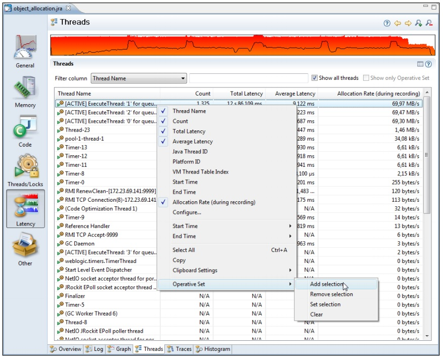
现在，将所有的事件都添加操作集中，不过我们真正感兴趣的是内存分配行为。为了更好的观察结果，可以切换到直方图标签页，为操作集中的内存分配事件建立一个直方图。
正如下面的截图所示，由于我们期望查找出内存分配事件主要发生在哪里，所以将操作集设置为只显示内存分配事件。一般情况下，我们对内存分配的持续时间，而是更看重其执行次数。因此，我们将数据按照事件发生次数进行排序，从而发现初始化String实例所导致的内存分配次数最多。
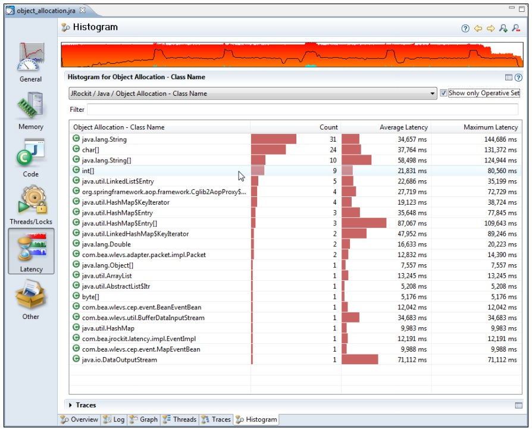
然后，进入到堆栈跟踪标签页，并将勾选"Show Only Operative Set"复选框。
从截图中可以看到，在3个频繁分配内存的线程中，几乎所有实例化String对象的操作都来自于readPaddedASCIIString(char [], int)方法调用。如果再加上char数组的话，就可以看到创建数组的操作也是在同一个方法中，因为字符串实际上就是对字符数组的封装。
通过上面的分析，可以得出结论，不光是要调整垃圾回收策略，还需要大幅降低内存系统的压力，具体方式是减少字符串对象的创建，或者减少对这种会创建字符串对象的方法的调用次数。